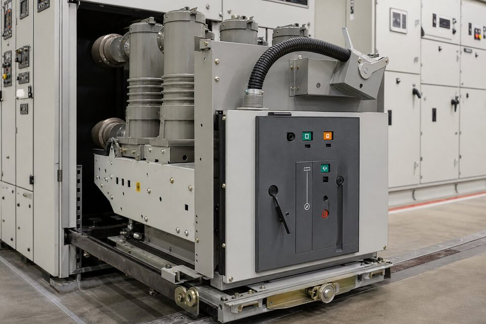

اصل قطع قوس در خلأ
در کلید وکیوم، کنتاکتهای متحرک و ثابت داخل یک محفظه سرامیکی-فلزی پلمبشده قرار دارند که خلأ آن در کارخانه ایجاد و پلمب شده است. هنگام باز شدن کنتاکتها زیر بار، قوس الکتریکی تنها از بخار فلزی خود کنتاکتها تغذیه میشود؛ چون هیچ گاز یونیزهپذیری در محیط نیست، ستون قوس پایدار نمیماند و در اولین عبور جریان از صفر خاموش میشود. این ویژگی یعنی سرعت قطع بالا، احتمال برقراری مجدد بسیار کم و فرسایش اندک کنتاکتها. به همین دلیل اتاقک خلأ به یک قطعه کماستهلاک تبدیل شده که در طول عمر کلید معمولا نیازی به تعویض ندارد و عملکرد آن با شمارش تعداد قطع و آزمونهای دورهای پایش میشود.

مقایسه با فناوریهای دیگر
در مقایسه با کلیدهای روغنی قدیمی، کلید وکیوم خطر آتشسوزی ندارد، اندازهگیری و نگهداری آن بسیار سادهتر است و عمر کنتاکت چند برابر است؛ به همین دلیل روغن عملا از رده خارج شده است. در مقایسه با کلید گازی، کلید وکیوم دغدغه نشتی گاز و مدیریت زیستمحیطی آن را ندارد و برای سطوح فشار متوسط تا حدود ۳۶ کیلوولت فناوری غالب بازار جهانی است. در سطوح بالاتر فشار قوی، فناوری گازی همچنان جایگاه خود را حفظ کرده است. نقطه توجه در کلیدهای وکیوم، اضافه ولتاژ کلیدزنی هنگام قطع بارهای سلفی کوچک مانند موتورهای کمبار است که در صورت نیاز با برقگیر یا فیلتر مخصوص محدود میشود.
ساختار و انواع نصب
- کلید ثابت: نصب مستقیم در سلول با دسترسی از جلو؛ اقتصادیترین پیکربندی.
- کلید کشویی: امکان خارج کردن کلید برای نگهداری و جایگزینی سریع بدون بیبرق کردن کل ردیف.
- مکانیزم فنری: شارژ دستی یا موتوری فنر برای قطع و وصل سریع و مستقل از اپراتور.
- نسخههای قطبجامد: عایقبندی رزینی سه قطب در یک بلوک، مناسب سلولهای فشرده.
- کویلهای قطع و وصل مستقل و کنتاکتهای کمکی برای مدار فرمان و اینترلاک.
در پروژههای نوسازی، بسیاری از کلیدهای روغنی قدیمی با کلید وکیوم کشویی جایگزین میشوند؛ در این سناریو تطبیق ابعاد شاسی و مدار فرمان با سلول موجود اهمیت دارد و سازندگان کیتهای تطبیق مخصوص سلولهای قدیمی عرضه میکنند. اگر نوسازی در برنامه است، نقشه و مشخصات سلول فعلی را برای استعلام کیت ارسال کنید تا از دوبارهکاری جلوگیری شود.
نگهداری و پایش وضعیت
کلید وکیوم ذاتا کمنگهداری است، اما بینیاز از بازرسی نیست. آزمونهای دورهای شامل تست عایقی بین قطبها و نسبت به زمین، اندازهگیری مقاومت کنتاکت در حالت وصل برای تشخیص فرسایش، تست تایم قطع و وصل و بازرسی مکانیزم فنری و روغنکاری نقاط متحرک است. در سلولهای کشویی، کنتاکتهای گلشکل و قفلهای مکانیکی نیز باید بررسی شوند چون خرابی آنها مانع ورود کامل کلید به وضعیت وصل میشود. نتایج این آزمونها باید روندسازی شوند؛ افزایش تدریجی مقاومت کنتاکت یا تغییر تایم، نشانههای قابل اتکایی برای برنامهریزی تعویض پیش از خطا هستند.
نکات استعلام خرید
در استعلام، ولتاژ نامی و سطح عایقی، جریان نامی، جریان قطع کوتاهمدت و زمان تحمل، نوع نصب ثابت یا کشویی، ولتاژ مدار فرمان و لوازم جانبی موردنیاز را ذکر کنید. اگر کلید برای قطع موتور یا بانک خازنی استفاده میشود، حتما قید کنید چون الزامات قطع این بارها متفاوت است و ممکن است تجهیز خاصی لازم شود. در پروژههای دارای وندورلیست برندهای مجاز را اعلام نمایید و در صورت نوسازی، مشخصات سلول موجود را پیوست کنید. زمان تحویل کلیدهای وکیوم بسته به برند و پیکربندی متفاوت است و در برنامه پروژه باید لحاظ شود.
عیبیابی رایج کلیدهای وکیوم
با وجود قابلیت اطمینان بالا، کلیدهای وکیوم نیز مشکلات رایجی دارند که شناخت آنها بهرهبرداری را سادهتر میکند. شارژ نشدن فنر معمولا به موتور شارژ یا میکروسوئیچهای موقعیت مربوط است و باید قبل از هر بهرهبرداری دستی بررسی شود. اگر کلید در وضعیت وصل قرار نمیگیرد، اولین مظنون اینترلاکهای مکانیکی و الکتریکی هستند که ممکن است به درستی آزاد نشده باشند؛ این اینترلاکها ایمنی را تضمین میکنند و نباید دور زده شوند. افزایش مقاومت کنتاکت در آزمونهای دورهای، نشانه فرسایش اتاقک خلأ است و در تغییر تایم قطع و وصل نیز باید مکانیزم و مدار فرمان بررسی شوند. در کلیدهای کشویی، گیر کردن در ریلها یا خرابی کنتاکتهای گلشکل میتواند مانع اتصال کامل شود و باید در بازرسیهای دورهای کنترل گردد.
جمعبندی
کلید وکیوم انتخاب پیشفرض کلیدزنی فشار متوسط در دنیاست: قطع مطمئن، عمر بالا و نگهداری کم. با تعیین درست مشخصات نامی، توجه به نوع بار و برنامه بازرسی دورهای، این کلیدها دههها سرویس قابل اتکا در شبکه توزیع و واحدهای صنعتی ارائه میدهند.
سوالات رایج
کلید وکیوم چگونه کار میکند؟
کنتاکتها درون یک اتاقک خلأ باز و بسته میشوند؛ چون محیطی برای یونیزاسیون وجود ندارد، قوس در اولین عبور جریان از صفر خاموش شده و برقرار نمیشود.
مزیت اصلی کلید وکیوم نسبت به گازی چیست؟
عمر بالای کنتاکت، قطع بدون مواد مضر زیستمحیطی، ابعاد کوچکتر و نیاز نگهداری کمتر؛ به همین دلیل در فشار متوسط جایگزین غالب فناوریهای قدیمی شده است.
عمر اتاقک خلأ چقدر است؟
اتاقکها به صورت کارخانهای پلمب و با خلأ پایدار ساخته میشوند و معمولا دهها سال عمر میکنند؛ معیار فرسودگی، تعداد قطعهای انجامشده و نتیجه آزمونهای دورهای است.
کلید وکیوم کجا نصب میشود؟
در سلولهای فشار متوسط برای قطع فیدرها، ترانسفورماتورها و موتورها؛ هم به صورت ثابت و هم کشویی در تابلوهای فشار متوسط.
مطالب مرتبط
با ذکر ولتاژ نامی، جریان قطع و پیکربندی سلول، کلید وکیوم از برندهای معتبر عرضه میشود.
مشاهده صفحه محصول ثبت RFQ همین محصولتامین این تجهیزات را به پیشرو تجهیز فرتاک بسپارید
شرکت پیشرو تجهیز فرتاک تامینکننده تخصصی تجهیزات صنعتی برای پروژههای نفت، گاز، پتروشیمی، فولاد و نیروگاهی است. برای دریافت پیشنهاد فنی و قیمت، استعلام (RFQ) خود را ثبت کنید تا کارشناسان مهندسی فروش در کوتاهترین زمان پاسخ دهند.
- تامین برق صنعتیتجهیزات تابلو و حفاظتی
- تامین تجهیزات صنایع نفت و گازپکیج مواد مطابق وندورلیست